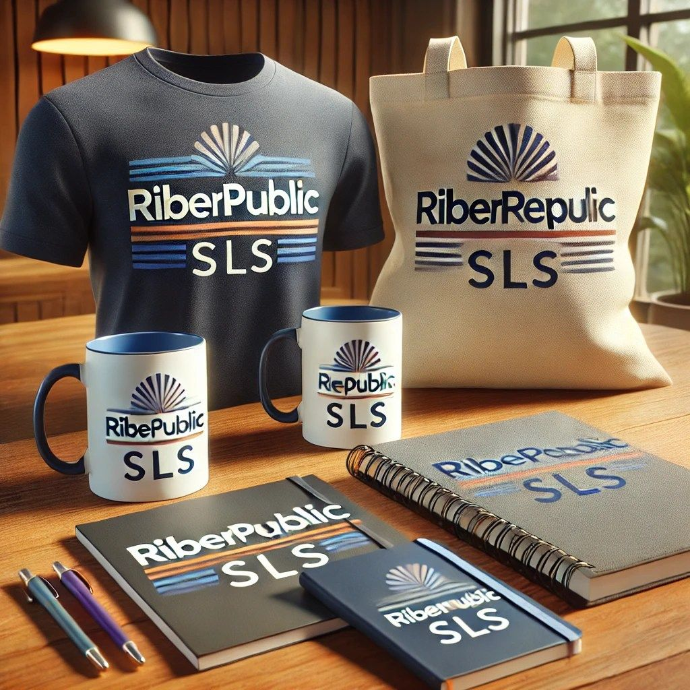
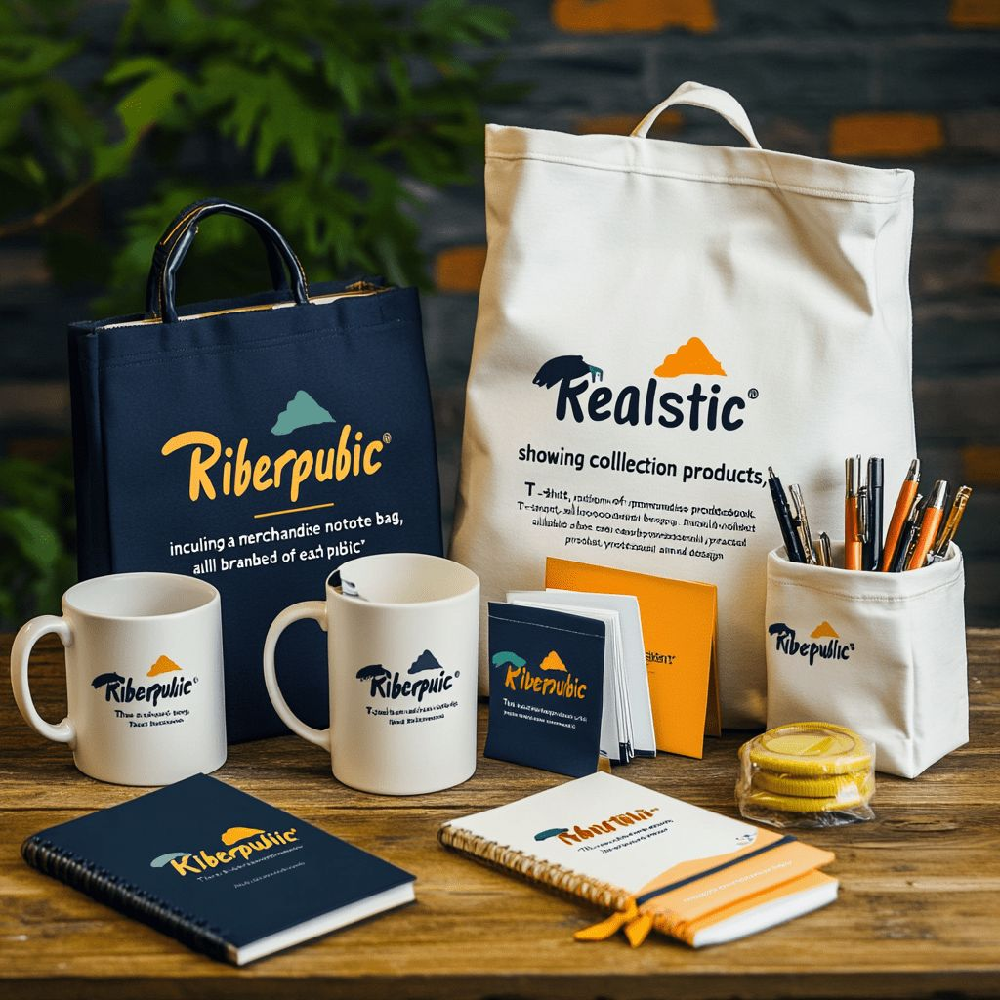
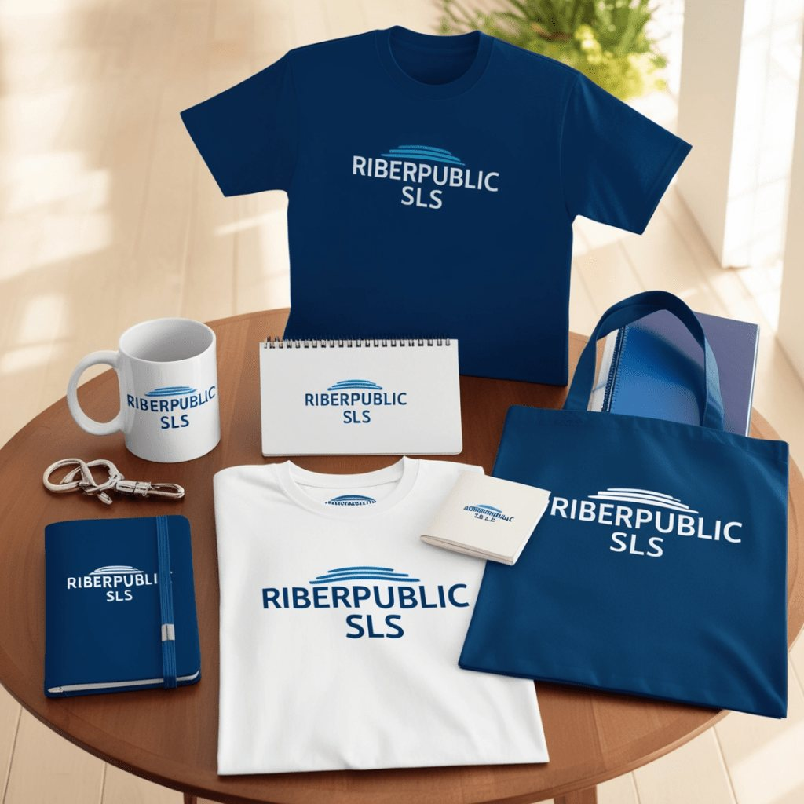
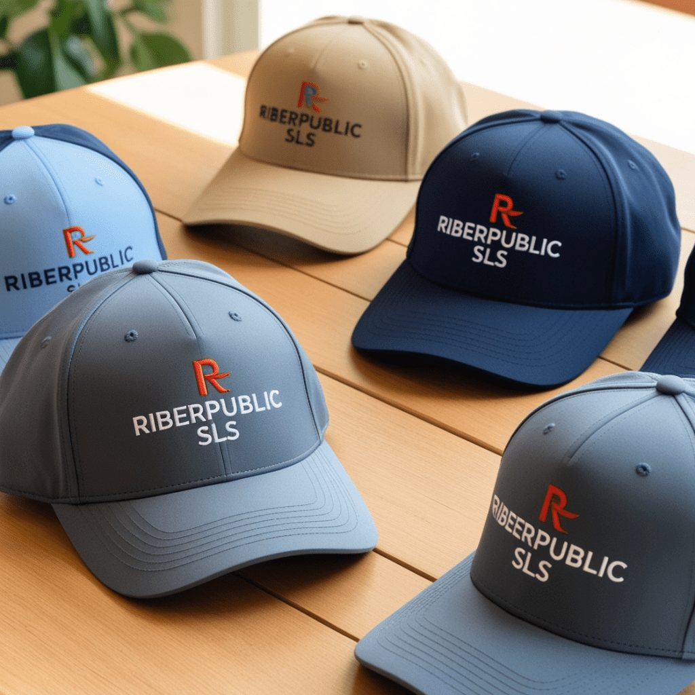
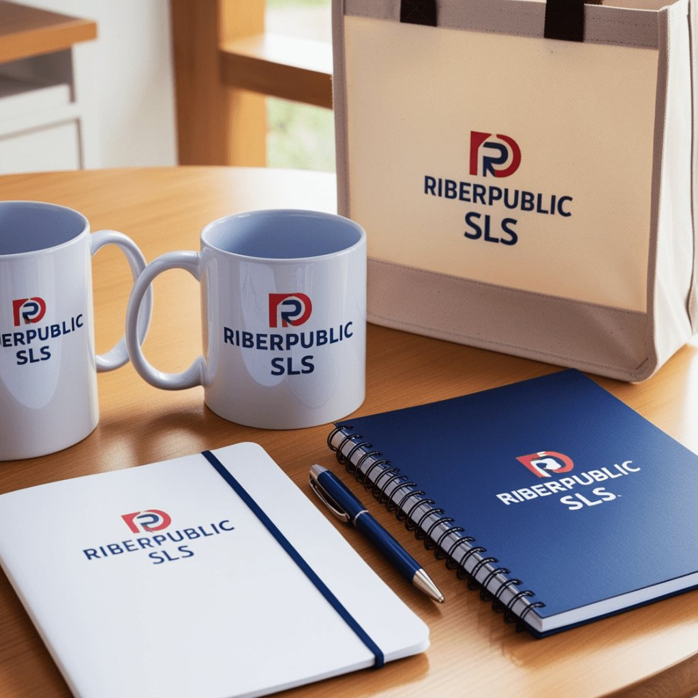
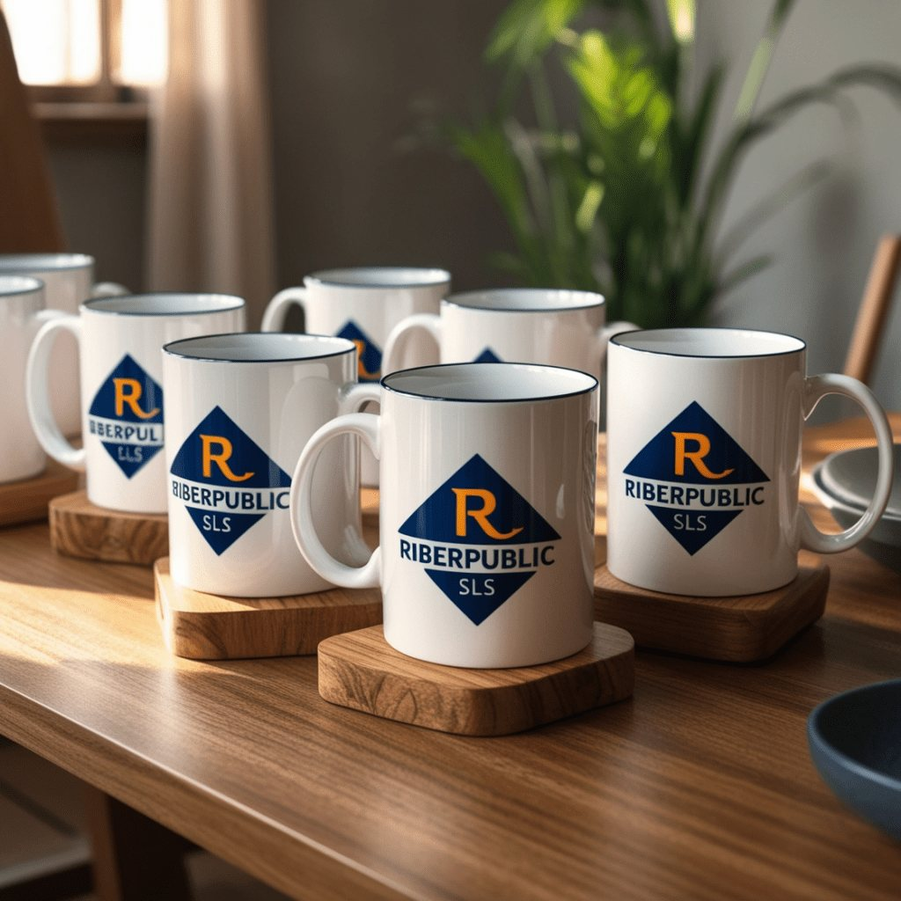
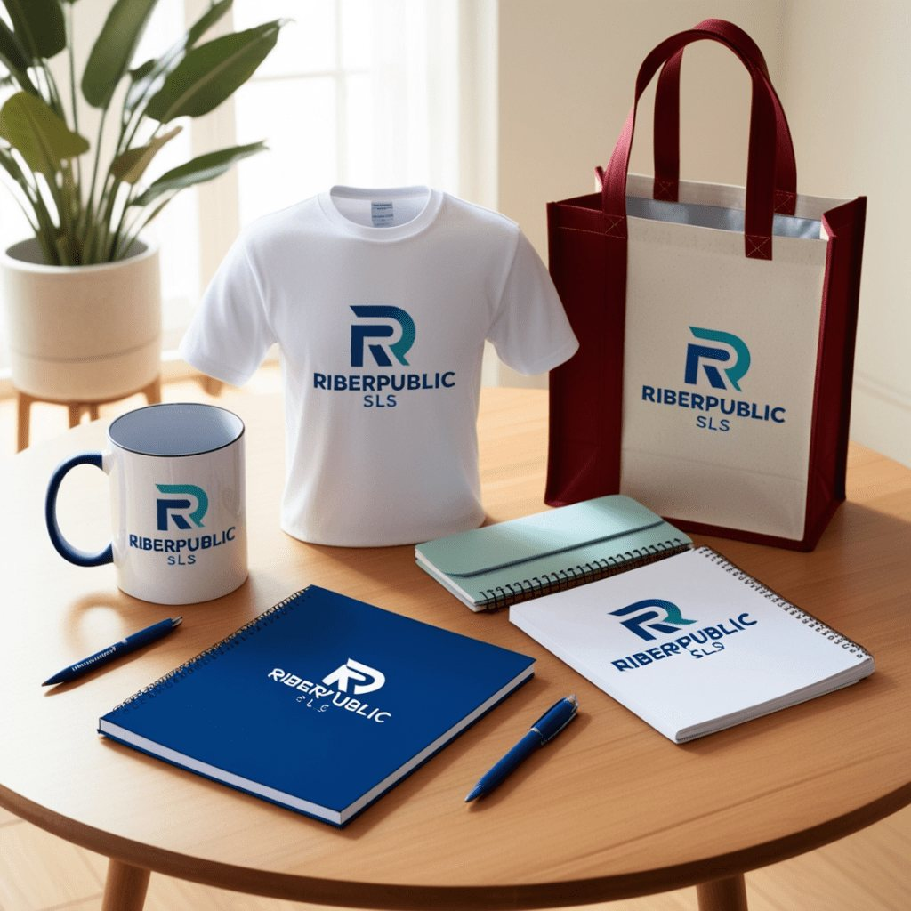
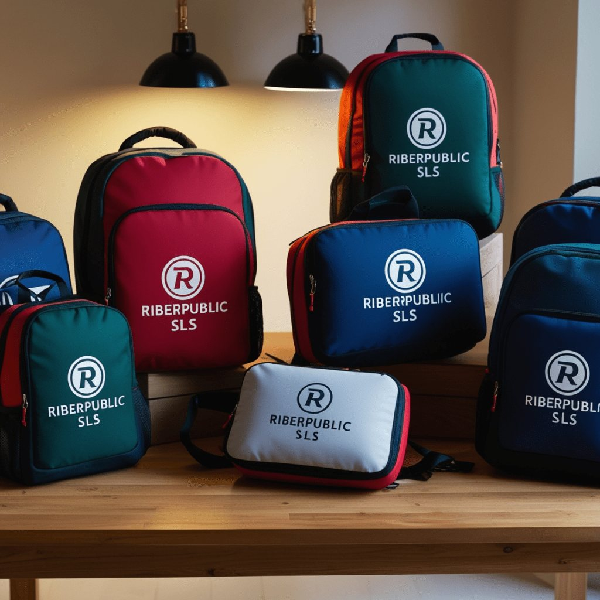

Últimamente he estado probando varias herramientas de IA. Quería crear imágenes de merchandising promocional con nuestra empresa simulada, Riberpublic SLS, especializada en publicidad, marketing y merchandising promocional. Mi alumnado necesita crear contenido para las redes sociales, nuestro catálogo y nuestra web, así que usé Leonardo AI, MidJourney y DALL·E (a través de ChatGPT) para ver cuál daba mejores resultados.
Primero, pedí a ChatGPT que generara varios prompts de imagen, porque no se me da muy bien y la herramienta los crea bastante precisos:
Una imagen realista que muestre una colección de merchandising promocional —una taza, una camiseta, un cuaderno y una bolsa de tela—, todo con el logo de Riberpublic SLS claramente visible en cada producto, colocado de forma profesional sobre una mesa de madera en un entorno natural y bien iluminado.

DALL·E con ChatGPT
DALL·E produjo imágenes bastante coherentes, pero el texto no salió bien; le costó este aspecto. A pesar de muchas instrucciones, no conseguí imágenes realmente realistas: siempre parecían dibujos. Es rápido, pero integrado en ChatGPT dejó bastante que desear (tengo el plan de pago ChatGPT Plus).

MidJourney
MidJourney crea imágenes llamativas para el porfolio de Riberpublic, pero no logró incorporar el logo con claridad en los productos. Podría funcionar bien para proyectos más artísticos o creativos, pero no para necesidades de marca concretas como la nuestra; ni siquiera dándole una imagen real del logo funcionó bien. Aun así, usaría MidJourney con confianza para crear rostros, donde realmente destaca.






Leonardo AI: el mejor con diferencia
Con el mismo prompt, Leonardo AI fue el único que generó una imagen realista con el texto claramente visible en todos los productos. No es perfecto, pero es bastante preciso, y lo mejor de todo es que es gratis: te da 150 monedas al día para generar imágenes, lo que es perfecto para mi alumnado.
Tras probar las tres, tengo claro que si necesitas imágenes precisas con texto, Leonardo AI es la opción. Para proyectos más creativos MidJourney sería mi favorito, pero en nuestro caso Leonardo ganó con diferencia.